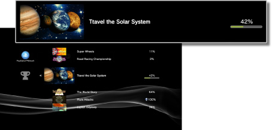

PlayStation™Network > Kupa Koleksiyonu
Kupa Koleksiyonu
Kupa özelliğini destekleyen oyunlarda belirli hedeflere ulaştığınızda kupalar kazanabilirsiniz. Kazandığınız kupalar PS3™ sisteminize kaydedilir.
Kupa türleri
Kupalar dört derecede kategorize edilir. Genelde, dereceler kupa kazanmadaki zorluk derecesine göredir. Kullanılabilir kupa türleri ve kupa kazanabileceğiniz koşullar oyuna göre değişir.
Kupa koleksiyonunuzu kontrol etme
1. |
|
|---|---|
|
 |
|
2. |
Kontrol etmek istediğiniz oyunu seçin. |
|
|

Kupa bilgilerinizi PSNSM sunucusuna kaydetme
Bir Sony Entertainment Network hesabını kaydettiyseniz, PSNSM sunucusunda kazandığınız kupalar hakkında bilgileri kaydedebilirsiniz. Bilgileri sunucuya kaydetmek için PSNSM girişi yapmanız veya kayıtlı kupa bilgilerini kontrol etmeniz gerekir.
Kupa bilgileri aşağıdaki koşullarda otomatik olarak PSNSM sunucusuna kaydedilir:
 (PlayStation™Network) >
(PlayStation™Network) >  (Kupa Koleksiyonu) öğesini seçtiğinizde
(Kupa Koleksiyonu) öğesini seçtiğinizde (Arkadaşlar) > [Profil] altındaki (Kupaları Karşılaştır) öğesini seçtiğinizde
(Arkadaşlar) > [Profil] altındaki (Kupaları Karşılaştır) öğesini seçtiğinizde

İpuçları
- PlayStation®4 sisteminize veya PlayStation®Vita sisteminize bağlı bir hesapla PSNSM'de oturum açtığınızda, bu sistemlerde kazandığınız kupaları da görüntüleyebilirsiniz.
- PSNSM'e giriş yapın, (PlayStation™Network) altındaki (Kupa Koleksiyonu) öğesini seçin,
 düğmesine basın ve sonra [Çevrimdışı Mod] öğesine geçmek için seçenekler menüsünden [Mod Geçişi Yap] öğesini seçin. [Çevrimdışı Mod] içinde, PS3™ sisteminizde kayıtlı kupa bilgilerini de kontrol edebilirsiniz.
düğmesine basın ve sonra [Çevrimdışı Mod] öğesine geçmek için seçenekler menüsünden [Mod Geçişi Yap] öğesini seçin. [Çevrimdışı Mod] içinde, PS3™ sisteminizde kayıtlı kupa bilgilerini de kontrol edebilirsiniz. - Bir oyun tam oyun deneme sürümü (bir PlayStation®Plus hizmeti) olarak indirildiğinde, oyunda kazandığınız kupalar PSNSM sunucusuna kaydedilmez. Oyunu satın alırsanız, satın almadan önce kazandığınız kupalar PSNSM sunucusuna kaydedilir.
Kazandığınız kupaları görebilen oyuncu grubunu kontrol etme
(PlayStation™Network) > [Hesap Yönetimi] > [Gizlilik Ayarları] öğesine giderek kazandığınız kupaları görebilen oyuncu grubunu kontrol edebilirsiniz.
Her oyun için kazandığınız kupaları gösterip göstermemeyi ayarlayabilirsiniz. Ayarlamak istediğiniz oyunu seçmek için (PlayStation™Network) > (Kupa Koleksiyonu) öğesine gidin, düğmesine basın ve sonra seçenekler menüsünden [Gizlilik Ayarları] öğesini seçin. Yalnızca seçtiğiniz oyunlar için kupa bilgilerini gizlemek için [Bu Oyunun Kupalarını Göster] öğesinin seçimini kaldırın.
İpuçları
- (PlayStation™Network) > [Hesap Yönetimi] > [Gizlilik Ayarları] altında kupa gösterme ayarları altında [Hiç Kimse] seçildiğinde, bu ayar öncelik kazanır. Her oyun için [Bu Oyunun Kupalarını Göster] onay kutusu seçilse bile kupa bilgileri paylaşılmaz.
- Kupa bilgileriniz gizli tutulduğunda, diğer oyunculara kupa kazanmamışsınız gibi görünecektir.
- Her oyun için farklı bir gösterme aralığı seçemezsiniz.
Kazanılan kupa durumunu arkadaşlarla karşılaştırma
Kazanılan kupa durumunu (Arkadaşlar) altındaki arkadaşlarınızla karşılaştırabilirsiniz.
Ayrıntılar için, bkz. (Arkadaşlar) > [Arkadaşlar listenizden] > [Profilleri görüntüleme].